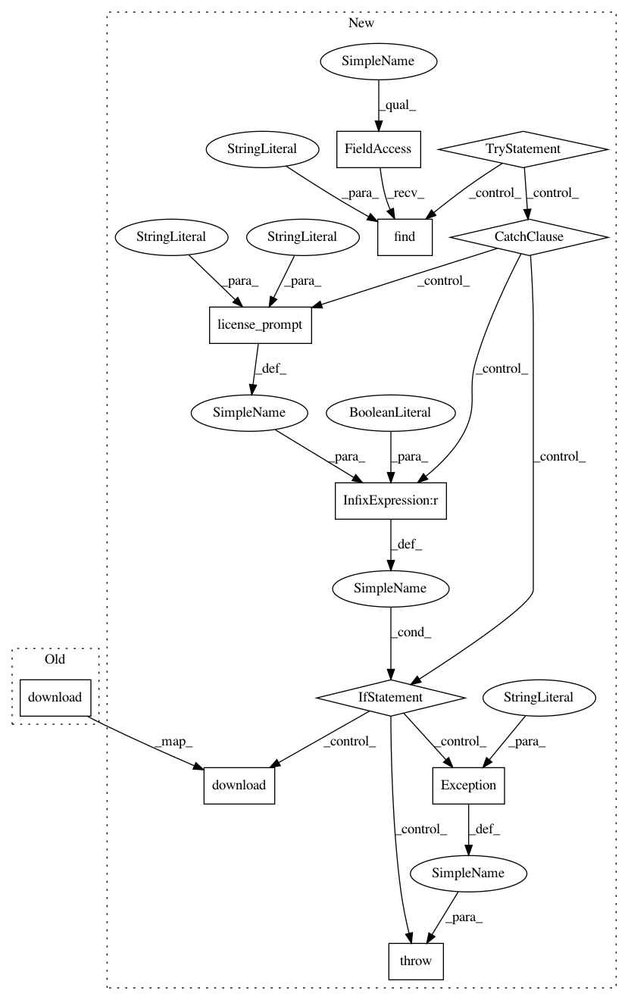

53bffb88d3b4809f7c4319344f5ee4d185701f23,examples/most_common_word_sense/feature_extraction.py,,,#,23
Before Change
from numpy.linalg import norm
nltk.download("averaged_perceptron_tagger")
nltk.download("punkt")
// -------------------------------------------------------------------------------------//
After Change
"without downloading averaged_perceptron_tagger")
nltk.download("averaged_perceptron_tagger")
try:
nltk.data.find("tokenizers/punkt")
except LookupError:
if license_prompt("Punkt model", "http://www.nltk.org/nltk_data/") is False:
raise Exception("can"t continue data prepare process "
"without downloading punkt")
nltk.download("punkt")
// -------------------------------------------------------------------------------------//
def extract_features_envelope(target_word, definition, hyps_vec, model_w2v):
extract features
In pattern: SUPERPATTERN
Frequency: 3
Non-data size: 11
Instances
Project Name: NervanaSystems/nlp-architect
Commit Name: 53bffb88d3b4809f7c4319344f5ee4d185701f23
Time: 2018-05-16
Author: amit.yaccobi@intel.com
File Name: examples/most_common_word_sense/feature_extraction.py
Class Name:
Method Name:
Project Name: NervanaSystems/nlp-architect
Commit Name: 53bffb88d3b4809f7c4319344f5ee4d185701f23
Time: 2018-05-16
Author: amit.yaccobi@intel.com
File Name: examples/np_semantic_segmentation/feature_extraction.py
Class Name: Wordnet
Method Name: __init__
Project Name: NervanaSystems/nlp-architect
Commit Name: 53bffb88d3b4809f7c4319344f5ee4d185701f23
Time: 2018-05-16
Author: amit.yaccobi@intel.com
File Name: examples/np_semantic_segmentation/feature_extraction.py
Class Name: NLTKCollocations
Method Name: __init__